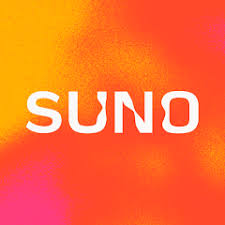
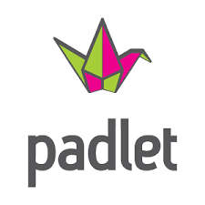

Proyecto final
Ha llegado la hora de realizar el proyecto final del recurso. Tenéis que hacer una poesía que tenga en cuenta todas las características estilísticas del autor sobre el que investigasteis. Ayudaros para ello de todas las actividades y conocimientos que habéis ido adquiriendo a lo largo de estas sesiones.
Una vez realizada la poesía, usa la aplicación de IA SUNO para crear una canción. Escoge el ritmo que mejor se adecúe al contenido de tu creación y al estilo del autor.
Por último, comparte el enlace en el Padlet creado para ello. Además, escucha las creaciones de tus compañeros y comenta qué te han parecido.
| Agrupamiento: Trabajo individual | Herramienta creación canciones: Suno | Herramienta compartir proyecto: Padlet |
.jpg) |
 |  |